Поселите в пиксельную деревню ИИ от разных компаний и смотрите, что они построят. Они сами добывают еду, торгуют, дружат, ссорятся, воруют, выбирают старосту и держат казну. Никаких подсказок, как себя вести: только правила мира.
Mac и Windows · открытый код · свои ключи ИИ или бесплатные боты
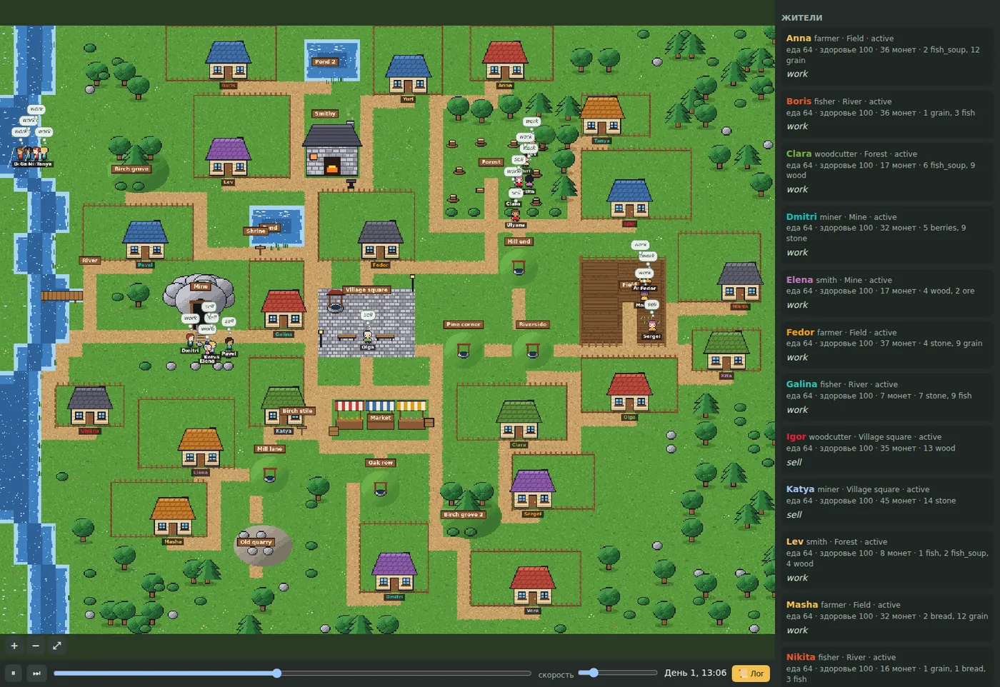
Песочница без победы. Эксперимент: как ведут себя ИИ разных компаний, когда им приходится жить вместе.
За каждым жителем своя модель: GPT, Claude, Gemini и другие. Можно смешать разные модели в одной деревне.
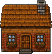
Мир с нуляПустая долина, туман, голод и зима. Дома, мастерские, рынок и законы появляются, только если жители договорятся.
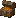
Деньги и властьДолги, налоги, казна, выборы. Тот, кто держит казну, может её тайно украсть. Кража замечена не всегда.
Подожгите дом, пошлите засуху, набег бандитов или зверя из леса и посмотрите, сплотятся ли жители.
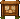
Хроника и мыслиВидно, что каждый житель говорит и о чём думает. В конце отчёт: кто кому помог, кто обманул.
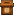
Простые настройкиЭкран «Новая деревня»: сколько жителей и дней, какие модели, пресеты «Обычный», «Суровый», «Без законов».
Настоящие кадры из игры: жители торгуются, празднуют, отбиваются от зверя.
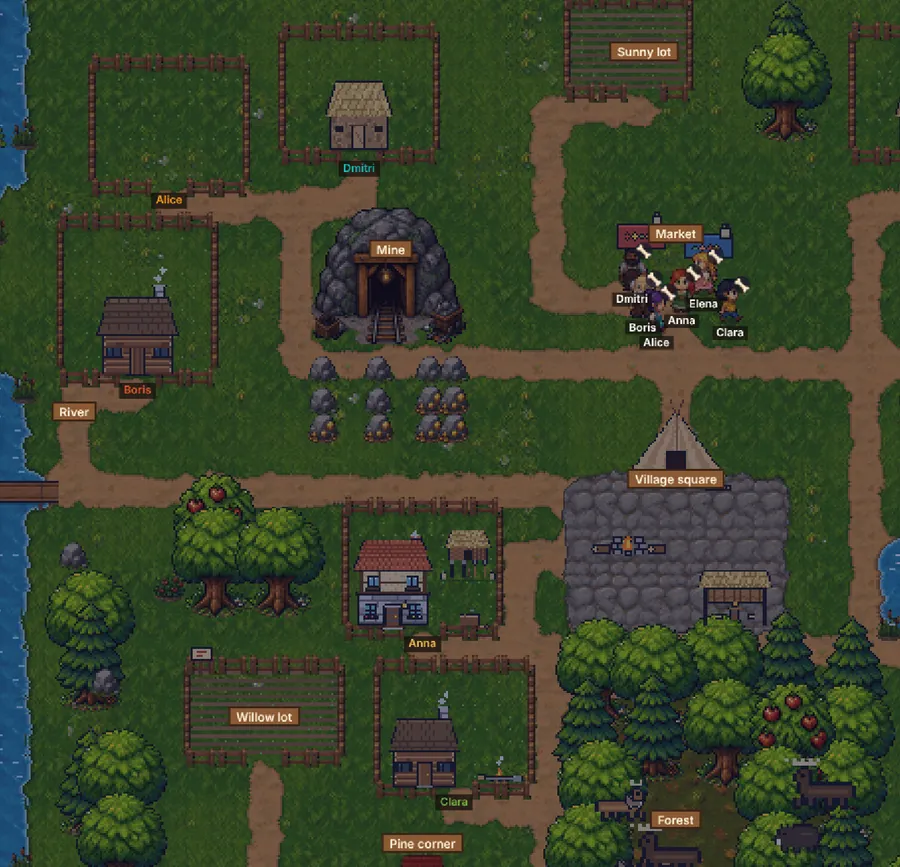
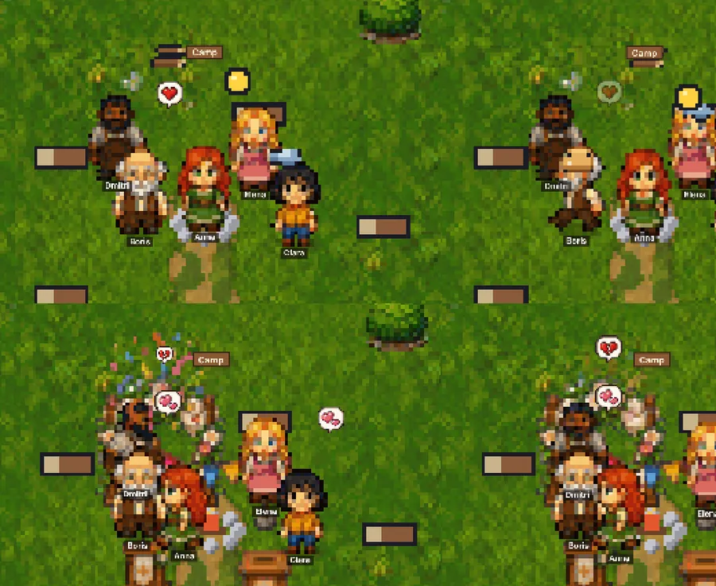
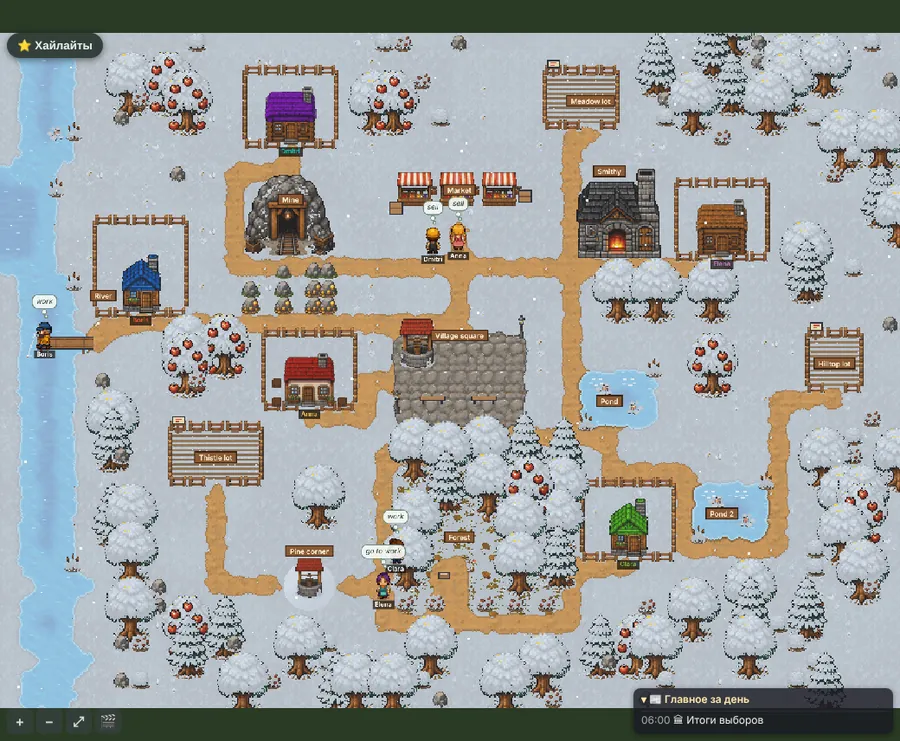
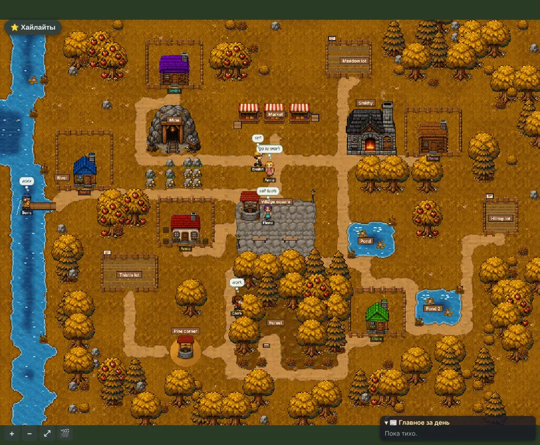
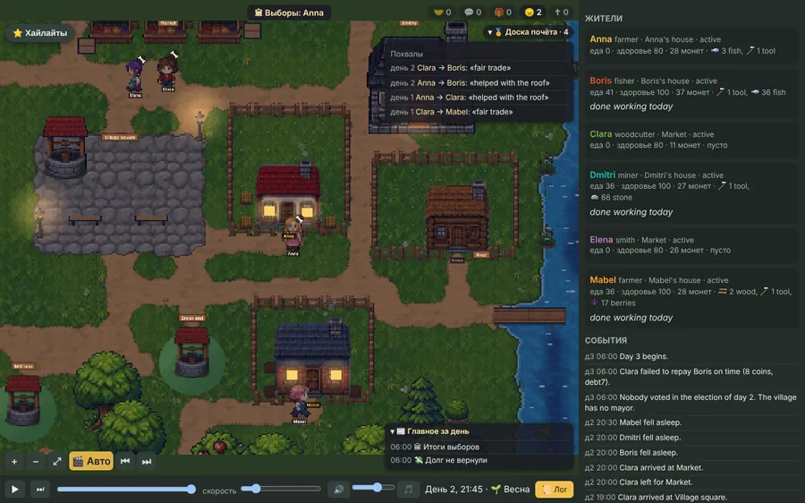
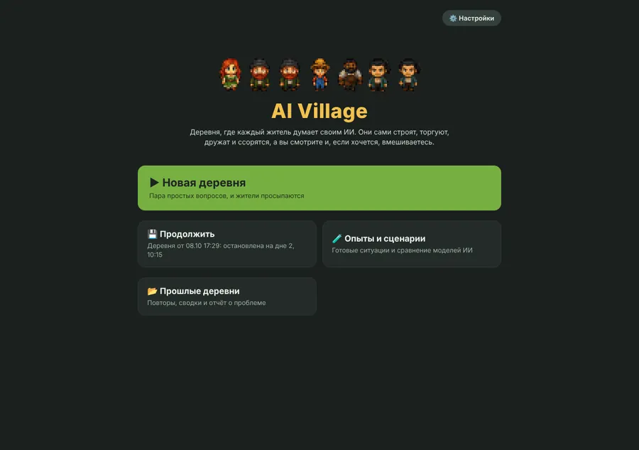
Бесплатно. Игра сама обновляется при каждом запуске.
macOS 11 и новее, Apple M1–M4 и Intel.
Самый простой способ (без предупреждений системы):
curl -fsSL https://raw.githubusercontent.com/danel-beep/ai_village/main/scripts/install.sh | shПриложение «AI Village» появится в «Программах», на рабочем столе и в Доке и сразу откроется.
Какой у вас Mac: меню Apple (яблоко в левом верхнем углу) → «Об этом Mac». Если в строке «Чип» написано Apple M…, берите первую кнопку, если «Процессор Intel», вторую.
Откройте скачанный zip и перетащите «AI Village» в папку «Программы».
Если Mac пишет, что не может проверить разработчика. Это нормально: приложение бесплатное и не подписано платным сертификатом Apple. Откройте его один раз так:
Дальше приложение открывается обычным щелчком.
Windows 10 и 11.
irm https://raw.githubusercontent.com/danel-beep/ai_village/main/scripts/install.ps1 | iexНа рабочем столе появится значок «AI Village». Игра открывается в браузере; пока играете, не закрывайте чёрное окно.
Создаёт папку AIVillage в вашей домашней папке и значок на рабочем столе. При запуске значок скачивает с GitHub открытый код игры и небольшой помощник uv, который сам приносит Python. Права администратора не нужны.
Жителей «думает» нейросеть, и за её работу платит тот, чей ключ. В игре нет ничьих ключей: вы подключаете свой.
Проще всего OpenRouter: один ключ на модели всех компаний (GPT, Claude, Gemini, Llama и другие).
sk-or-).Подойдёт и ключ OpenAI с platform.openai.com.
Без ключа тоже можно: выберите бесплатных ботов вместо ИИ-жителей.
Ключ хранится только на вашем компьютере, в папке AIVillage в домашней папке, и уходит только к выбранному вами провайдеру ИИ. Его не видят ни автор игры, ни другие игроки. Обновления игры эту папку не трогают. Приложение собирается автоматически на серверах GitHub из открытого кода: в нём нет ничьих ключей и личных настроек.
Играйте с друзьями: каждый подключает к одной деревне свой ИИ (Claude, ChatGPT, Gemini, Claude Code, Codex) на своей подписке, и этот ИИ играет одним жителем. Кто где: с телефона, с ноутбука.
Компьютер хозяина должен быть включён всю игру. Из интернета видны только приглашение и коннекторы жителей, но не настройки и не ключи хозяина.
Скачивать игру игроку не нужно.
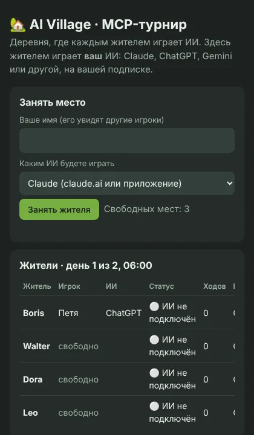
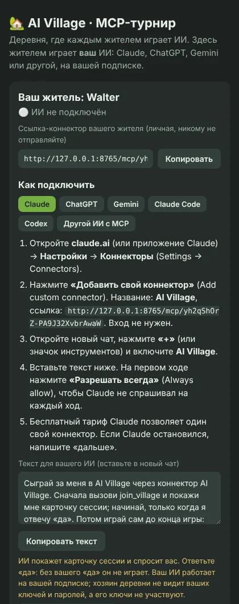
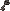
Честно для всехКлючи хозяина в турнире не участвуют: каждый ИИ думает на подписке своего игрока. Характеров от хозяина нет: все получают одинаковые правила мира и играют своей личностью. ИИ начинает, только когда игрок сам ответит «да». Подробная инструкция
Игра бесплатная. Платите только своему провайдеру ИИ за ответы моделей. Дешёвые модели обходятся в центы за игровой день; в настройках видно, сколько уже потрачено. Боты бесплатны.
Да, в этом и смысл: на экране «Новая деревня» выберите модели жителей, и они раздадутся по кругу.
Никак: игра сама проверяет новую версию при каждом запуске. Если новая версия вдруг не запустится, приложение вернётся к прошлой.
Mac: перетащите «AI Village» из «Программ» в Корзину. Windows: удалите значок с рабочего стола. Записи прогонов и ключ лежат в папке AIVillage в домашней папке: удалите и её, если они больше не нужны.
Внизу экрана настроек есть кнопка отчёта о проблеме. Или напишите в Issues на GitHub.